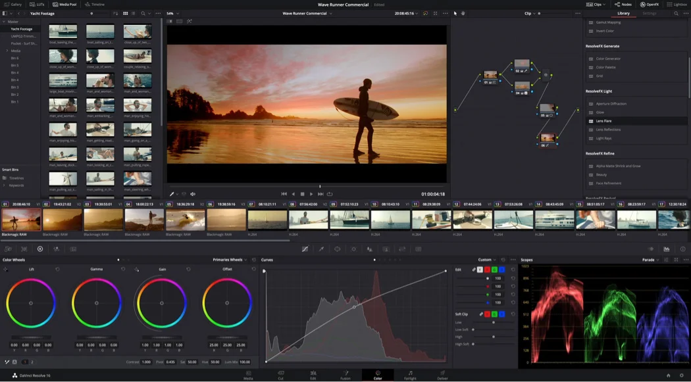
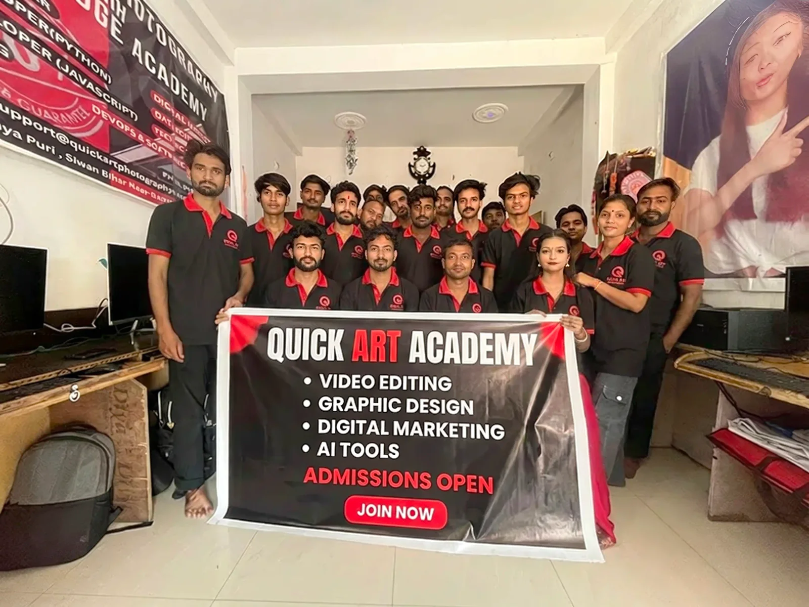

Professional Video Editing
Raw footage को organize, cut और edit करके clean और professional video तैयार करना सीखें।
Learn Professional Video Editing, Color Grading & VFX
Hindi में Video Editing, Color Grading और VFX सीखें। Real projects पर practice करें।
⭐ 4.9 Rating | 1800+ Students
100% Practical | Real Projects | Advanced Color Grading
इस DaVinci Resolve Video Editing Course में शुरुआत software के interface और basic editing से होगी।
इसके बाद आप Professional Timeline Editing, Cinematic Storytelling, Color Correction, Advanced Color Grading, Wedding Film Editing, Fusion VFX, Fairlight Audio और Final Export Workflow सीखेंगे।
हमारा focus सिर्फ यह बताना नहीं है कि कौन-सा tool कहाँ मिलता है।
हम आपको यह समझाने की कोशिश करते हैं कि raw footage आने के बाद project कहाँ से शुरू करें, footage कैसे manage करें, story कैसे build करें, colors कैसे correct करें और final cinematic look कैसे create करें।
Raw footage को organize, cut और edit करके clean और professional video तैयार करना सीखें।
Nodes, Curves, Qualifiers, Power Windows और professional grading tools के साथ footage का look develop करना सीखें।
Wedding footage को music, emotion, storytelling और professional colors के साथ cinematic film में बदलना सीखें।
Titles, Masking, Tracking, Compositing और basic visual effects का practical workflow सीखें।
Basic से Advanced तक Practical Training
अगर आपने DaVinci Resolve पहले कभी open भी नहीं किया है, तब भी आप शुरुआत कर सकते हैं।
हम पहले software का interface और basic editing workflow समझेंगे। उसके बाद छोटे projects पर practice करते हुए धीरे-धीरे Advanced Editing, Cinematic Storytelling और Professional Color Grading की तरफ बढ़ेंगे।
अगर आप पहले से Premiere Pro, EDIUS या किसी दूसरे software में editing करते हैं, तो यह DaVinci Resolve Course आपके Editing और Color Grading workflow को upgrade करने में मदद करेगा।
यहाँ हमारा learning process simple है:
पहले सीखिए → हमारे साथ Practice कीजिए → खुद Edit कीजिए → Color Grade कीजिए → अपना Final Project तैयार कीजिए।

Color सिर्फ Change नहीं करें — सही Look Create करना सीखें
DaVinci Resolve की सबसे powerful strengths में से एक उसका professional Color Grading workflow है।
लेकिन professional Color Grading सिर्फ LUT लगाने या Saturation बढ़ाने का नाम नहीं है।
हमारे DaVinci Resolve Color Grading Course में पहले आपको footage को technically correct करना सिखाया जाता है। उसके बाद story, lighting, skin tone और mood के हिसाब से cinematic look create करना समझाया जाता है।
Exposure • Contrast • White Balance • Saturation और basic correction को सही तरीके से control करना सीखें।
Bride, Groom और दूसरे subjects की skin tone को natural और consistent रखना सीखें।
Nodes को सिर्फ create करना नहीं, बल्कि एक clean और professional node workflow develop करना सीखें।
Qualifier, HSL Selection, Power Windows और Tracking की मदद से specific colors और areas को control करना सीखें।
अलग-अलग cameras और lighting conditions में shoot किए गए footage को visually match करना सीखें।
Wedding Films, Music Videos और cinematic projects के लिए अपना professional look develop करना सीखें।

हमारा DaVinci Resolve Course in Hindi beginners से लेकर working editors और Wedding Filmmakers तक अलग-अलग learners को ध्यान में रखकर बनाया गया है।
अगर आपने पहले कभी professional editing नहीं की है, तो basic से शुरुआत कर सकते हैं।
अपने Wedding Videos को professionally edit और cinematic Color Grade करना सीखें।
Premiere Pro या EDIUS से आगे बढ़कर DaVinci Resolve का professional post-production workflow सीखें।
अगर आपका main interest Color Correction और Color Grading में है, तो अपनी Color Grading skills develop करें।
YouTube, Reels और Social Media Videos को professional look देना सीखें।
Video Editing और Color Grading skills को client projects और freelancing में use करना सीखें।
Internet पर DaVinci Resolve के tools सीखना मुश्किल नहीं है।
लेकिन real project मिलने के बाद problem शुरू होती है।
Footage कैसे arrange करें? कौन-सा shot रखें? Color Correction कहाँ से शुरू करें? Skin Tone कैसे सही करें? Nodes किस order में रखें? अलग-अलग cameras को कैसे match करें?
हमारे DaVinci Resolve Course में इन्हीं practical problems पर focus किया जाता है।
हमारा goal सिर्फ software के buttons याद करवाना नहीं है।
हम चाहते हैं कि आप समझें कि एक professional editor और colorist real project पर decision कैसे लेता है।
हर important topic को practical project के साथ समझें।
Real footage पर Editing और Color Grading करके सीखें।
Professional Node-Based Workflow और Cinematic Looks practically सीखें।
Learning के दौरान project या Color Grading में problem आने पर guidance प्राप्त करें।
Course successfully complete करने के बाद Certificate of Completion प्राप्त करें।
Complete Editing + Color Grading + VFX Workflow
Build Your Foundation
DaVinci Resolve Interface • Media Page • Cut Page • Edit Page • Project Setup • Import Media • Timeline • Resolution • Frame Rate • Basic Cutting • Trimming • Project Organization
इस module में software की basic understanding strong की जाएगी ताकि आगे Advanced Editing और Color Grading आसानी से समझ सकें।
Edit Faster & Cleaner
Advanced Cutting • Ripple Edit • Roll Edit • Slip & Slide • Multicam Editing • Speed Changes • Keyframes • Transitions • Effects • Compound Clips • Adjustment Clips • Keyboard Shortcuts
इस part में सिर्फ tools नहीं, बल्कि एक fast और organized editing workflow develop करने पर focus रहेगा।
Turn Raw Footage into a Film
Shot Selection • Story Structure • J-Cuts • L-Cuts • Music Selection • Beat Sync • Emotional Pacing • Speed Ramping • Cinematic Transitions • Wedding Highlights • Teaser Editing
Cinematic film सिर्फ transitions और effects से नहीं बनती।
अच्छी film के पीछे सही shots, सही music, सही timing और emotion होना जरूरी है।
First Correct, Then Create
Exposure • White Balance • Contrast • Saturation • Scopes • Waveform • Parade • Vectorscope • Primary Wheels • Lift • Gamma • Gain • Log Controls
इस module में footage की technical problems को identify और correct करना सीखेंगे।
Create Professional Cinematic Looks
Node-Based Workflow • Serial Nodes • Parallel Nodes • Curves • Hue vs Hue • Hue vs Saturation • Qualifier • HSL Selection • Power Windows • Tracking • Skin Tone Correction • Shot Matching
यह DaVinci Resolve Color Grading Course का सबसे important practical हिस्सा है, जहाँ basic correction से आगे बढ़कर professional grading workflow पर काम करेंगे।
Create the Right Wedding Look
Bride & Groom Skin Tone • Outdoor Wedding Look • Indoor Color Correction • Mixed Lighting • Day Wedding • Night Wedding • Highlight Recovery • Camera Matching • Cinematic Wedding Look • LUT Workflow
Wedding footage में skin tone सबसे important होती है।
इसलिए यहाँ सिर्फ cinematic colors नहीं, बल्कि natural skin tone और consistent wedding look पर भी focus रहेगा।
Add Motion & Visual Effects
Fusion Interface • Node Workflow • Text Animation • Titles • Masking • Tracking • Motion Tracking • Green Screen Basics • Compositing • Basic VFX • Creative Effects
Fusion को अलग complicated software की तरह नहीं, बल्कि real editing project में जरूरत के हिसाब से use करना सीखेंगे।
Give Your Film Better Sound
Dialogue Editing • Noise Cleanup • Background Music • Sound Effects • Audio Levels • EQ Basics • Voice Enhancement • Music Balance • Wedding Sound Design • Final Audio Mix
Professional film में सिर्फ visuals नहीं, sound भी important होता है।
इसलिए DaVinci Resolve Video Editing Course में basic professional audio workflow को भी practical तरीके से cover किया जाता है।
Create Content for Different Platforms
YouTube Editing • Instagram Reels • Vertical 9:16 Videos • Music Videos • Short-Form Editing • Beat Sync • Social Media Workflow • Professional Export
एक ही software में Wedding Films के साथ YouTube और Social Media Content का workflow भी सीखें।
From Raw Footage to Final Film
Complete Project • Video Editing • Storytelling • Color Correction • Advanced Color Grading • Audio • Final Review • Render Settings • 4K Export • Client Delivery • Project Backup
Final stage में आप अलग-अलग tools सीखने की जगह उन्हें एक complete project workflow में use करना समझेंगे।

Wedding Filmmaking & Video Editing Trainer
Hi, I’m Anil Sharma.
मैं कई वर्षों से Wedding Photography, Filmmaking और Video Editing industry में काम कर रहा हूँ।
Quick Art Photography Academy में मेरा focus सिर्फ software के buttons और tools सिखाना नहीं है।
मैं students को वह practical workflow समझाने की कोशिश करता हूँ जो real wedding और client projects पर actually काम आता है।
DaVinci Resolve में भी हम सिर्फ Nodes बनाने या LUT लगाने तक limited नहीं रहते।
हम पहले यह समझते हैं कि footage में problem क्या है, उसे correct कैसे करना है और उसके बाद story के हिसाब से सही cinematic look कैसे create करना है।
Founder — Quick Art Photography Academy
Color Grading सिर्फ videos देखकर नहीं सीखी जा सकती।
अलग-अलग cameras, skin tones, lighting conditions और exposure वाले footage पर खुद काम करना जरूरी है।
इसीलिए हमारे DaVinci Resolve Course में practical learning को सबसे ज्यादा importance दी जाती है।
आप footage edit करेंगे, colors correct करेंगे, Nodes बनाएँगे, अलग-अलग looks try करेंगे और फिर compare करेंगे कि कौन-सा result बेहतर लग रहा है।
गलतियाँ भी होंगी—और उन्हीं गलतियों को correct करते-करते आपकी editing और Color Grading eye develop होगी।
Learn → Practice → Compare → Correct → Create Your Look

Editing से Final Delivery तक Complete Workflow
एक Professional Video Editor का काम सिर्फ clips को cut और join करना नहीं है।
आपको footage management, storytelling, music, pacing, color, audio और final delivery—सभी चीजों की understanding होनी चाहिए।
इसीलिए हमारा DaVinci Resolve Video Editing Course एक complete project workflow पर focus करता है।
आप basic timeline editing से शुरुआत करेंगे और धीरे-धीरे Cinematic Editing, Wedding Film Editing, Color Grading, Fusion VFX और Final Export तक पहुँचेंगे।
इसका फायदा यह है कि अलग-अलग tools सीखने के बजाय आपको समझ आता है कि इन सभी tools को एक real project में साथ कैसे use करना है।
घर से step-by-step DaVinci Resolve सीखें।
Classes को दोबारा देखकर अपनी speed के हिसाब से practice करें।
Training simple Hindi/Hinglish में समझाई जाती है।
Real footage और practical projects के साथ काम करें।
Professional Color Correction और Cinematic Grading workflow सीखें।
Fusion के साथ practical Motion Graphics और basic VFX सीखें।
Video के साथ clean और balanced audio workflow समझें।
Course successfully complete करने के बाद certificate प्राप्त करें।
Learning के दौरान doubts के लिए support प्राप्त करें।
Online tutorials से अलग-अलग tools आसानी से सीखे जा सकते हैं।
लेकिन एक tutorial Nodes सिखाता है, दूसरा Color Wheels, तीसरा Editing और चौथा Fusion।
Problem यह है कि tools तो समझ आ जाते हैं, लेकिन complete professional workflow clear नहीं होता।
हमारे DaVinci Resolve Course में learning को real project के हिसाब से रखा गया है।
आप Basic Editing से शुरुआत करके Cinematic Storytelling → Color Correction → Advanced Color Grading → Wedding Film Look → Fusion VFX → Fairlight Audio → Final Delivery तक पूरा workflow सीखते हैं।
हमारा focus software याद करवाना नहीं है।
हमारा focus software को real projects में use करना सिखाना है।
DaVinci Resolve सीखने के बाद आपकी skill सिर्फ Video Editing तक limited नहीं रहती।
आप Video Editing के साथ Color Correction, Professional Color Grading, Wedding Film Post-Production, Social Media Editing और basic VFX जैसे areas में अपनी skills develop कर सकते हैं।
लगातार practice और strong portfolio के साथ आप Wedding Video Editor, Freelance Video Editor, Colorist या Post-Production Editor जैसी opportunities explore कर सकते हैं।
अगर आपका अपना Photography Studio है, तो इस DaVinci Resolve Course in Hindi के through सीखी गई skills को अपने Wedding Films की editing और visual quality improve करने में use कर सकते हैं।
अगर आप Best DaVinci Resolve Course in India search कर रहे हैं, तो course select करते समय सिर्फ यह मत देखिए कि उसमें कितने tools cover किए गए हैं।
यह देखना ज्यादा जरूरी है कि आपको real project practice, professional Video Editing, Color Correction और practical Color Grading workflow सीखने को मिल रहा है या नहीं।
Quick Art Photography Academy का DaVinci Resolve Course beginners और existing editors दोनों को ध्यान में रखकर बनाया गया है।
हम basic से शुरुआत करके Advanced Editing, Cinematic Storytelling, Professional Color Grading, Wedding Film Editing, Fusion VFX, Fairlight Audio और Final Delivery तक step-by-step आगे बढ़ते हैं।
हमारा goal सिर्फ course complete करवाना नहीं है।
हम चाहते हैं कि आप जो सीखें, उसे अपने real projects में confidently use कर सकें।
हाँ। अगर आपने DaVinci Resolve पहले कभी use नहीं किया है, तब भी basic level से शुरुआत कर सकते हैं।
आप Professional Video Editing, Cinematic Storytelling, Color Correction, Advanced Color Grading, Wedding Film Editing, Fusion VFX, Fairlight Audio और Final Export Workflow सीखेंगे।
हाँ। हमारा DaVinci Resolve Color Grading Course workflow basic Color Correction से शुरू होकर Nodes, Curves, Qualifiers, Power Windows, Skin Tone और Cinematic Look Creation तक जाता है।
हाँ। Training simple Hindi/Hinglish में दी जाती है ताकि beginners भी concepts आसानी से समझ सकें।
हाँ। Training का main focus practical learning और real footage workflow पर है।
हाँ। Wedding Film Editing, Skin Tone Correction, Camera Matching और Cinematic Wedding Color Grading पर खास focus रखा गया है।
हाँ। Fusion में Nodes, Titles, Masking, Tracking, Compositing और basic VFX workflow cover किया जाता है।
Course successfully complete करने के बाद Certificate of Completion दिया जाता है।
Edit. Color Grade. Create Cinematic Films.
अगर आप सिर्फ Video Editing नहीं बल्कि Professional Color Grading और complete Post-Production Workflow सीखना चाहते हैं, तो Quick Art Photography Academy के साथ अपनी learning शुरू करें।
Professional Editing + Advanced Color Grading + Fusion VFX
Quick Art Photography Academy
1800+ Students | Practical Training | Hindi Learning